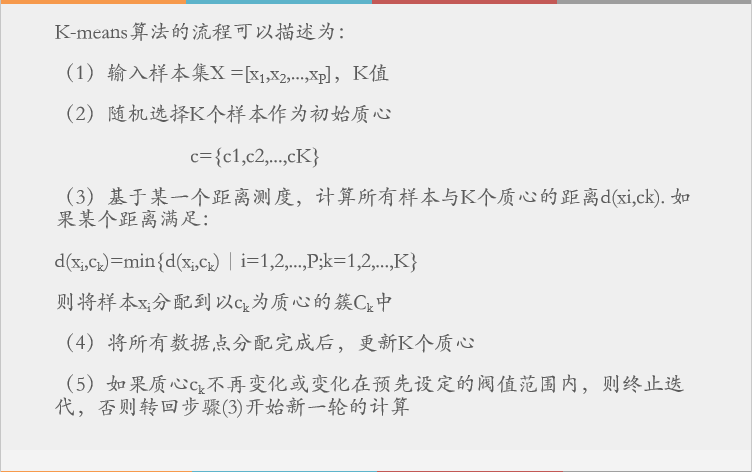

聚类分析
聚类是一种无监督学习，聚类的方法几乎可以应用于所有对象。
聚类分析根据聚类算法将数据或样本对象划分成两个以上的子集。
每一个子集称为一个簇，簇中对象因特征属性值接近而彼此相似。不同簇对象之间则彼此存在差异。
把相似的对象归于统一组，不同对象归于不同组。需要一种相似度的计算方法
相似度的计算方法
- Manhattan Distance（曼哈顿距离）（l1范数）
- Euclidean Distance（欧式距离），距离测度中简单直观的适合于二、三维的距离测度（l2范数）：
- Minkowski Distance（闵可夫斯基距离），可以理解为n维空间的欧式距离：
- Cosine Distance（余弦距离）（n维向量夹角）
Mahalanobis Distance马氏距离
聚类分析方法
划分法(Partitioning Method)
将N个对象划分为k组。
基于距离采取互斥的簇划分，采用迭代的定位技术，将一个对象从一个簇移至另一个簇来改进划分，使得簇内对象尽量相关，簇间对象尽可能无关。
K-means 是典型的基于划分的聚类算法层次法(Hierarchical Method)
对数据对象集进行层次分解。
凝聚法，将每一个对象作为一个单独簇，自底向上逐次合并相近的簇
分裂法，自顶向下分裂簇以得到满足要求的簇
基于密度的方法(Density-based Method)
大部分划分法是基于距离进行聚类，因此只能发现球状簇，对非球状簇的数据集不适用。
基于密度的方法则可以用于非球状数据集的聚类。
主要思想：只要簇“邻域”中的密度到达了设定的阈值，就将其划分给该簇。
也就是说，簇中的每个数据点，在给定半径的邻域中至少都含有一定数目的数据点。
基于密度的方法可以过滤噪声或离群点，并发现任意形状的簇。基于网格的方法(Grid-based Method)
基于网格的方法是将对象空间分割成有限个单元形成网格结构，然后在网格结构上进行聚类操作。
该方法的处理速度很快，因为其执行时间通常独立于数据对象的个数，而仅仅由量化空间中每一维的单元数决定。聚类分析的过程
样本准备与特征提取：根据样本特性选取有效特征，并将特征组向量化；
- 相似度计算：选择合适的距离测度函数，计算相似度
- 聚类：根据聚类算法进行聚类
聚类结果评估：对聚类质量进行评估并对结果进行解读。
聚类算法的模型评估指标
通过衡量簇内差异来衡量聚类的效果。
不选择使用Inertia进行评估的原因
不存在统一的标准来界定Inertia作为判断标准
- 它的计算太容易受到特征数目的影响，数据维度很大的时候， Inertial的计算量会陷入维度诅咒之中，计算量会爆炸，不适合用来一次次评估模型。
- 对数据的分布有假设，假设数据满足凸分布（图像是凸函数），并假设数据是各向同性的（属性在不同方向代表相同含义）。这些使得它在细长簇、环形簇或者不规则流形时表现不佳。
当真实标签已知的时候
外在方法是在有基准可用的条件下，通过比较聚类结果和基准来评估聚类质量；当真实标签未知的时候
内在方法是在没有基准可用的情况下，通过簇间的分离情况和簇内的紧凑情况来评估聚类质量。轮廓系数(Silhouette Coefficient)
是内在评估方法常用的度量。假设N个样本组成的数据集分成了K个簇$C_1,C_2,C_3,\dots,C_K.$对于每个样本s$\in K$,s与簇内其他对象之间的平均距离为:
s与不属于所在簇的对象之间的最小平均距离为：
b(s)衡量s与其他簇的分离程度。a(s)衡量s与所属簇的紧密性。，轮廓系数越接近1，聚类效果越好。
优缺点评价：
- 优点：在有限空间取值；对数据分布没有假设，实用性强
- 缺点：在凸型的雷伤会比真实聚类得到更高的分数。
python实现
在sklearn中，模块metrics中的类silhouette_score来计算轮廓系数，返回值为所有样本轮廓系数的均值，同时还有一个silhouette_sample，返回每个样本自己的轮廓系数。
卡林斯基哈拉巴斯指数（Calinski-harabaz Index）
就维斯-布尔丁指数
权变矩阵
K-means聚类算法
K指分类为K簇，means意为簇的中心，即聚类中样本的均值。
算法思想：任选K个样本点作为中心，将剩余样本点进行划分。重新确定各个簇的中心，再将剩余点进行划分；不断重复这个过程，直至各个簇的质心不再变化。

初始质心的选择
K-Means算法中初始质心的放置是一个非常重要的环节，虽然时间足够的情况下一定会收敛，但是可能会收敛到局部最小值。
初始质心放置的位置不同，聚类的结果很可能也会不ー样，一个好的质心选择可以让K- Means避免更多的计算，让算法收敛稳定且更快。在之前讲解初始质心的放置时，我们是使用随机的方法在样本点中抽取k个样本作为初始质心，这种方法显然不符合稳定且更快的需求。为此，我们可以使用 random_ state参数来控制每次生成的初始质心都在相同位置，甚至可以画学习曲线来确定最优的 random_state是哪个整数
一个 random state对应一个质心随机初始化的随机数种子。如果不指定随机数种子，则 stearn中的K- means并不会只选择一个随机模式扔出结果，而会在每个随机数种子下运行多次，井使用结果最好的一个随机数种子来作为初始质心。我们可以使用参数n_init来选择，每个随机数种子下运行的次数。这个参数不常用到，默认10次，如果我们希望运行的结果更加精确，那我们可以増加这个参数n_ini的值来増加每个随机数种子下运行的次数。
K值的选择依据
K值选择需要建立一个距离测度指标，首先确定一个距离的计算方法，然后通过求簇内平方和（簇内所有样本点与质点差的平方和）来表示。例如采用欧几里得距离，则：
其中簇内平方和（cluster Sum of Square）又叫做Inertia。
肘部法则：首先确定一个用来评价聚合效果的函数（这里以Inertia为例子），以分类个数K为自变量，分类后的误差平方和SSE为因变量，则曲线的拐点即为最佳聚类簇数。
Inertia用来衡量聚合效果的好坏（也可以用其他方法来衡量样本到簇中心的距离指标）
K较小时，随着K的增大，分类更加精细，每个簇的聚合程度比较高，SSE下降较快。K超过最优聚类簇数时，Inertia的下降速度会骤减，Inertia会随着K值的继续增大而逐渐趋于平缓。SSE和K的关系图像人的手肘。